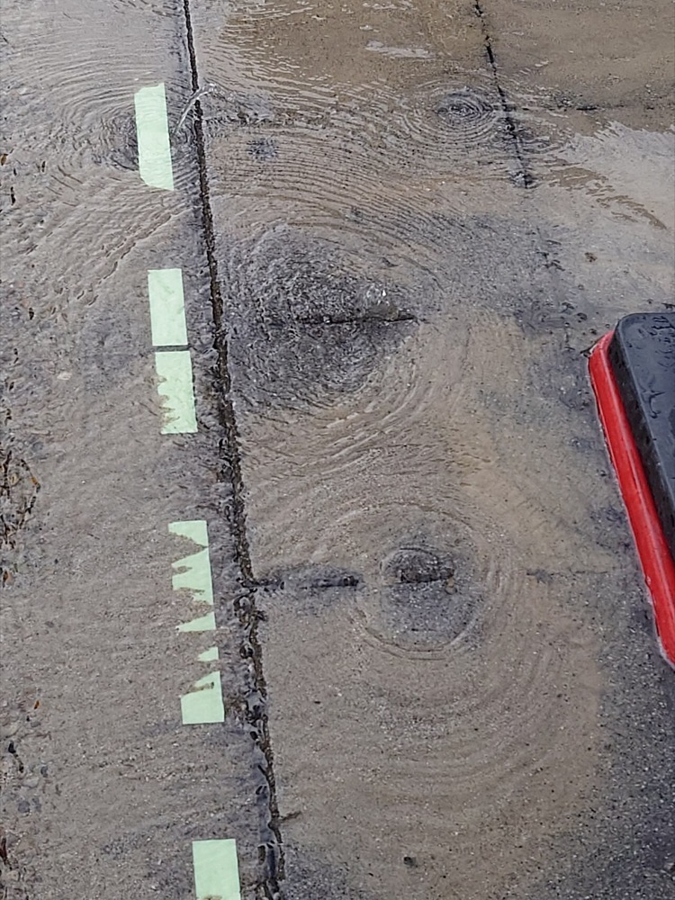
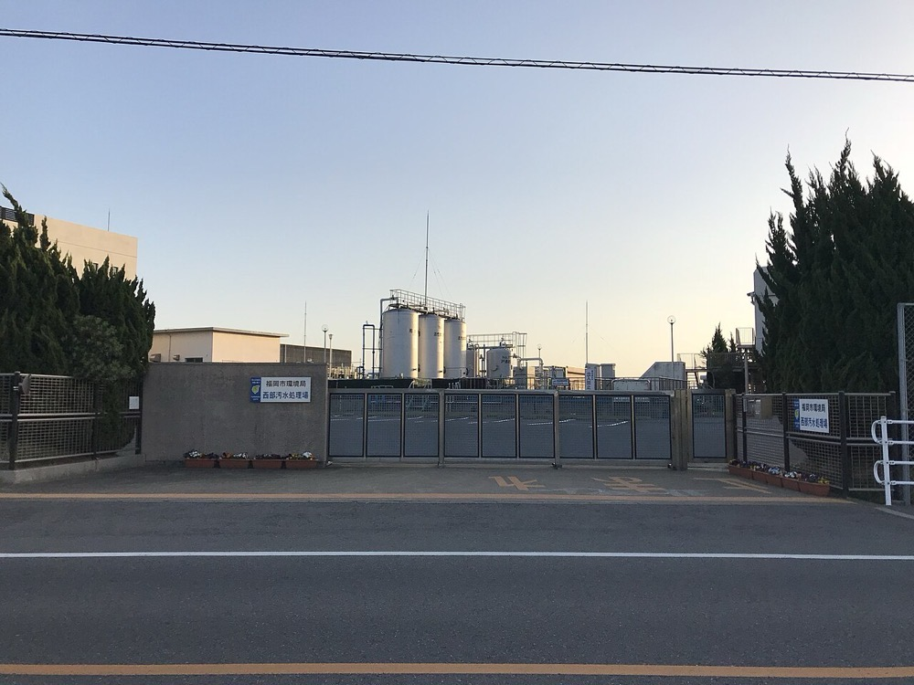

自治体の水道局と下水道部局に、漏水調査と管路の劣化データ整備を売る事業である。衛星データとAIで調査範囲を絞り、少人数で広い管路を診断する。実績を積んだ後は、地域の維持管理会社を買収してウォーターPPPの構成員として運営と更新を受託する。
| 項目 | 数値 | 年度・出典 |
|---|---|---|
| 水道事業の建設改良費 うち新増設0.4兆円・改良1.0兆円 | 1.4兆円 | R51 |
| 下水道事業の建設改良費 うち新増設0.9兆円・改良0.8兆円 | 1.7兆円 | R52 |
| 水道事業の総資産 | 32.6兆円 | R51 |
| 下水道事業の総資産 | 約60兆円 | R52 |
| 水道管路の総延長 | 773,235km | R51 |
| 下水道管路の総延長 | 約50万km | R6.3末3 |
建設改良費だけで年3.1兆円である。維持管理費の全国合計は今回の調査で確認できなかったため、市場規模には含めていない。したがって実際の市場は3.1兆円より大きい。
漏水調査と管路診断の市場は、公表された全国統計が確認できなかった。以下は推計である。
実在する契約の規模として、舞鶴市の戸別音聴による漏水調査業務は1件280万円で入札された15。1件あたりの規模は数百万円であり、件数を積み上げる商売である。

Veoliaの2025年のグループ売上は444億ユーロである14。米国の下水道に限った第三者O&Mの年間支出は約30億ドルと推計されている13。世界の水道運営は大手数社が国境を越えて受託する市場であり、規模は国内より一桁大きい。
| 変化 | 年と数値 |
|---|---|
| 人口と人手 | 水道職員はS55の7.6万人からR5の4.2万人へ44.2%減少した1。下水道職員はH9の約4.4万人からR5の約2.7万人へ39.1%減少した2。給水人口1万人未満の自治体では技術職員が1人を下回る1 |
| 設備の老朽化 | 法定耐用年数を超えた水道管路は196,022kmで経年化率25.4%である。更新率は0.61%にとどまる1。国土技術政策総合研究所は、この更新水準が続くと20年後に経年化率が約71%に達すると見込む5 |
| 事故 | 2025年1月28日の八潮市の道路陥没を受け、国は管径2m以上かつ30年以上経過した下水道管の全国特別重点調査を要請した。結果は2025年9月17日と2026年4月21日に公表された6 |
| 規制 | PPP/PFI推進アクションプラン R5改定で、R13年度までに水道100件・下水道100件のウォーターPPPを具体化する目標が置かれた4。汚水管の改築に対する国費支援は、R9年度以降ウォーターPPPの導入決定が要件となる3 |
| 案件の増加 | 具体化件数の累計はR7年度で水道29件・下水道33件である。R8.4.1時点で上下水道の19件が事業中であり、R8年度に8団体が事業を開始した3 |
| 技術 | 衛星データによる漏水リスク診断は2026年7月までに148,023kmの管路を分析し、延べ導入事業体は80を超えた11。AIによる管路劣化診断は掛川市で約1,062kmの全域に適用された12 |
| 企業 | 規模 | 位置 |
|---|---|---|
| メタウォーター | 売上2,098億円・営業利益129億円 2026年3月期8。うち日本1,534億円9 | 浄水場と下水処理場の機械・電気設備と運営。宮城県のコンセッションで優先交渉権者のグループを代表した7 |
| 水ing | 売上829億円・営業利益68億円 2025年3月期10 | 処理場の運転管理。株主3社が保有株式をインフロニア・ホールディングスへ譲渡すると2026年4月に報じられた10 |
| Veolia | グループ売上444億ユーロ 2025年14 | 世界最大の水道運営会社。日本でも運営を受託する |
| 天地人 | 延べ80事業体超11 | 衛星データによる漏水リスク診断 |
| Fracta | 掛川市約1,062km12 | AIによる管路劣化診断 |
処理場の包括的民間委託は633箇所で導入済みである3。これに対し管路の包括的民間委託は76契約にとどまる3。処理場の運転は大手が先行して受託しているが、管路の維持管理は委託がまだ少ない。

| 用途 | 金額 | 内容 |
|---|---|---|
| 人件費 | 1,800万円 | 漏水調査の技術者2名と営業1名の12か月分 |
| 調査機材 | 600万円 | 音聴棒・漏水探知器・相関式漏水探知器・管路探査機・車両 |
| データ解析 | 500万円 | 衛星解析の利用料、管路台帳のGIS化ツール、劣化予測モデルの試作 |
| 入札・許認可 | 100万円 | 競争入札参加資格の取得、保険 |
| 運転資金 | 1,000万円 | 自治体の支払いは年度末に集中するため、完了から入金までの期間に充てる |
| 月 | 行うこと | 検証すること |
|---|---|---|
| 1〜2 | 法人設立、技術者採用、機材調達。人口5万人から30万人の自治体50団体の管路延長と調査の発注実績を一覧化する | 漏水調査を毎年発注する自治体の割合 |
| 3〜4 | 大手運営会社と設計コンサルに協力会社として営業する。自治体に衛星診断と音聴調査の組み合わせを提案する | 協力会社として受注できる単価 |
| 5〜8 | 最初の3件から5件を受託する。調査結果を管路台帳と照合し、劣化データを蓄積する | 1kmあたりの調査時間と漏水発見数 |
| 9〜10 | 次年度予算の要求時期に合わせ、管路データ整備の提案を出す | 翌年度予算への計上数 |
| 11〜12 | 近隣のウォーターPPP案件の公募情報を確認し、構成員の候補として大手と協議する | 構成員として参加できる条件 |
1年目の売上目標は0.3億円から0.5億円である。最大の検証点は、実績のない会社に自治体が直接発注するかどうかである。
| 段階 | 手段 | 金融機関 | 担保・根拠 |
|---|---|---|---|
| 1〜2年目 | 創業融資・運転資金の短期借入 | 日本政策金融公庫、信用保証協会付きの地銀融資 | 自治体との契約書。自治体は支払いの確実性が高い |
| 2〜3年目 | 調査機材・車両のリース | リース会社 | 機材そのもの |
| 3〜7年目 | 買収資金の借入 | 地銀、メガバンクの買収融資 | 買収先の営業キャッシュフローと株式 |
| 7年目以降 | レベル4参画時のプロジェクトファイナンス | メガバンク、政策投資銀行 | 運営権への抵当権設定3と利用料金収入 |
| 随時 | 補助金 | 国の導入検討費補助は自治体向け3 | 民間の直接の補助は確認できなかった |
上下水道の管路と施設は自治体の所有であり、受託者は担保にできる資産を持たない。資産を担保に借りる型Bが成立するのは、運営権に抵当権を設定できるレベル4のコンセッションに参画した後である。それまでの成長は買収で行うため、資金源の実態はCに近い。
| 年目 | 売上 | 営業利益 | 累計投資 | 借入残高 |
|---|---|---|---|---|
| 1 | 0.4億円 | -0.3億円 | 0.4億円 | 0億円 |
| 2 | 1.0億円 | 0.0億円 | 0.8億円 | 0.3億円 |
| 3 | 2.5億円 | 0.2億円 | 2.0億円 | 1.0億円 |
| 5 | 12億円 | 0.9億円 | 10億円 | 7億円 |
| 7 | 45億円 | 3.6億円 | 35億円 | 25億円 |
| 10 | 180億円 | 14億円 | 120億円 | 80億円 |
| 年目 | 売上 | 営業利益 | 累計投資 | 借入残高 |
|---|---|---|---|---|
| 1 | 0.25億円 | -0.4億円 | 0.4億円 | 0億円 |
| 2 | 0.5億円 | -0.1億円 | 0.6億円 | 0.2億円 |
| 3 | 1.0億円 | 0.05億円 | 0.8億円 | 0.3億円 |
| 5 | 3億円 | 0.2億円 | 2.5億円 | 1.5億円 |
| 7 | 7億円 | 0.5億円 | 5億円 | 3億円 |
| 10 | 15億円 | 1.2億円 | 10億円 | 6億円 |
10年で国内首位には届かない。運営市場の首位級であるメタウォーターは国内だけで1,534億円の売上がある9。水ingはインフロニア・ホールディングスの傘下に入る方向で報じられており10、大手の統合が進んでいる。楽観の10年目でも売上180億円であり、大手の1割強である。
止まる位置は2つ考えられる。1つは漏水調査と管路診断の専門領域で首位になる位置である。ただしこの領域は推計で約550億円であり、1,000億円の基準を満たさない。もう1つは特定の地方で管路の維持管理を束ねる地域首位であり、全国シェアでは上位に入らない。
首位に近づく条件は、管路の包括委託が処理場と同程度まで広がることである。処理場633箇所に対し管路76契約という差3が縮まれば、管路データを持つ会社の位置は上がる。この差が10年で縮まるかどうかは、自治体の判断に依存する。
海外の運営受託はVeoliaなどの大手が先行する。グローバルなインフラになる可能性は、診断データと解析の領域に限られる。
| # | 基準 | 判定 | 根拠 |
|---|---|---|---|
| 1 | 50年、魂を燃やし続けられるか | 創業者が判定 | |
| 2 | 10年以内に、国内市場規模1,000億円以上の市場でシェア1位になれるか | × | 運営市場は国内売上1,534億円の大手が先行し、楽観でも10年目の売上は180億円である。 |
| 3 | 4,000万円で始められ、融資で伸ばせるか | △ | 漏水調査は4,000万円で始められるが、担保にできる資産を持たないため伸ばす段階は買収融資に依存する。 |
| 4 | グローバルなインフラになり得るか | △ | 海外の運営は大手が先行しており、可能性は診断データと解析に限られる。 |
| 5 | 営業力が最初の売上に直接結びつくか | △ | 顧客の大半は自治体で入札と実績要件が先に立つが、大手運営会社とコンサルへの協力会社営業には結びつく。 |
| 6 | 同じビジョンを共有する仲間を誘える事業か | 創業者が判定 | |
| 7 | 本業が早く現金を生み、返済と出資の原資になるか | △ | 支払いの確実性は高いが年度末に集中し、営業利益率は6〜8%である。 |
| 8 | 投資先を束ねる群の中核になれるか | ○ | 地域の管工事会社や解析スタートアップを束ねる中核にはなれるが、範囲は上下水道の周辺に限られる。 |
| 9 | 成長の資金源がA・B・Cのどれに当たるか | C | 管路は自治体の所有で担保にならず、Bが成立するのはレベル4参画後である。 |